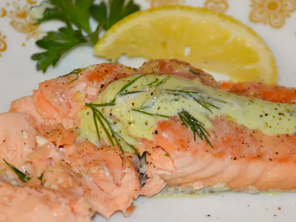

Poached Salmon

Directions
Ingredients
- ½ cup dry white wine
- ½ cup water
- 2 pounds salmon fillets
- 2 tablespoons butter, cut into small pieces
- 1 ½ teaspoons dried parsley
- 1 ½ teaspoons chopped garlic
- salt and pepper to taste
Steps
- Heat wine and water in a large nonstick skillet over medium-high heat for 5 minutes.
- Gently slide salmon fillets into poaching liquid. Dot fillets with butter, then sprinkle parsley, garlic, salt, and pepper over top.
- Bring to a slow boil, then reduce the heat to medium and poach until salmon flesh is firm and flakes easily with a fork, 10 to 15 minutes.